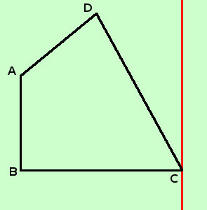
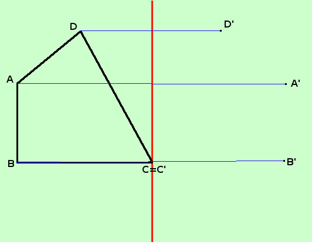
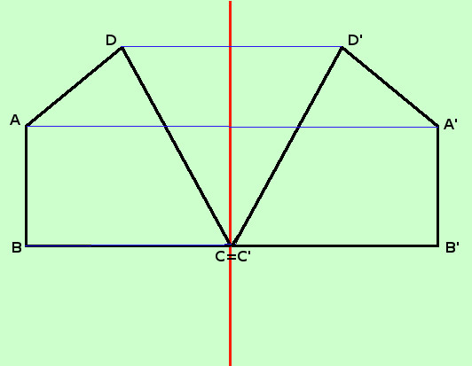
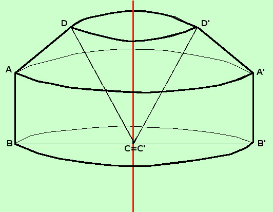

Come si disegna un solido di rotazione
Asse di rotazione non passante per l'interno del poligono
Per disegnare un solido di rotazione, avendo un poligono e un asse di rotazione devi seguire questi punti:
- Prima disegna la figura e l'asse di rotazione
Se il problema e' numerico, prima cerca di calcolare tutti i dati della figura che devi far ruotare
- Costruisci i punti simmetrici, rispetto all'asse di rotazione, dei vertici del poligono, cioe' vertice per vertice cosruisci il segmento di perpendicolare sull'asse di rotazione e prolungalo dall'altra parte con la medesima misura
Indica i punti corrispondenti con la stessa lettera ma con un apice: ad A corrisponde A', a B corrisponde B' eccetera
Naturalmente se un punto si trova sull'asse di rotazione allora coincide col suo corrispondente
- Ora congiungi fra loro i punti con l'apice in modo da cotruire la figura simmetrica di quella di partenza:
Se nella figura di partenza A e' collegato con B e con C allora devi collegare A' con B' e con C'
- Adesso traccia degli archi di circonferenza (schiacciati) in modo che punti corrispondenti siano agli estremi della circonfernza stessa: cioe' traccia una circonfernza (schiacciata) che passi per A A', una che passi per B B' eccetera;
Naturalmente se un punto si trova sull'asse di rotazione allora coincide col suo corrispondente e la circonferenza si riduce ad un punto
- Adesso la figura e' completa: per renderla piu' comprensibile puoi tracciare con segno piu' marcato le linee che si vedono e con segno piu' tenue le linee che restano all'interno del solido
Ti faccio un esempio: supponiamo di voler ruotare il quadrilatero ABCD della figura seguente attorno ad un asse di rotazione verticale passante per il vertice C
-
Disegno il quadrilatero e l'asse di rotazione (in rosso)
Potresti considerarlo come formato da un trapezio rettangolo sormontato da un triangolo con la base uguale alla base minore del trapezio

-
Ora da ogni vertice mando la perpendicolare sull'asse di rotazione e prolungo tale perpendicolare dall'altra parte in modo da avere segmenti uguali da una parte e dall'altra dell'asse di rotazione.
Chiamo il punto alla fine del segmento di perpendicolare con lo stesso nome ma con un apice
Il punto C essendo sull'asse di rotazione, coincide con il punto corrispondente C'

- Congiungo fra loro i punti in modo da costruire la figura simmetrica rispetto all'asse di rotazione.
Siccome A e' collegato con B e con D congiungo A' con con B' e con D' eccetera..

- Adesso al posto delle linee orizzontali sostituisco delle circonferenze schiacciate per dare l'idea della visione prospettica
Ho lasciato il diametro BCB' per capire meglio

Molto intuitivamente possiamo dire che la figura che ottengo e' data da un cilindro ABB'A' sormontato da un tronco di cono DAA'D' e con un buco a forma di cono DCD'
Molto intuitivamente perche' per esattezza dovrei dire:
un cilindro di altezza AB e raggio BC eccetera, ma questa pagina deve solo farti capire come costruire la figura; negli esercizi, avendo tutti i dati, potremo usare un linguaggio piu' appropriato
|